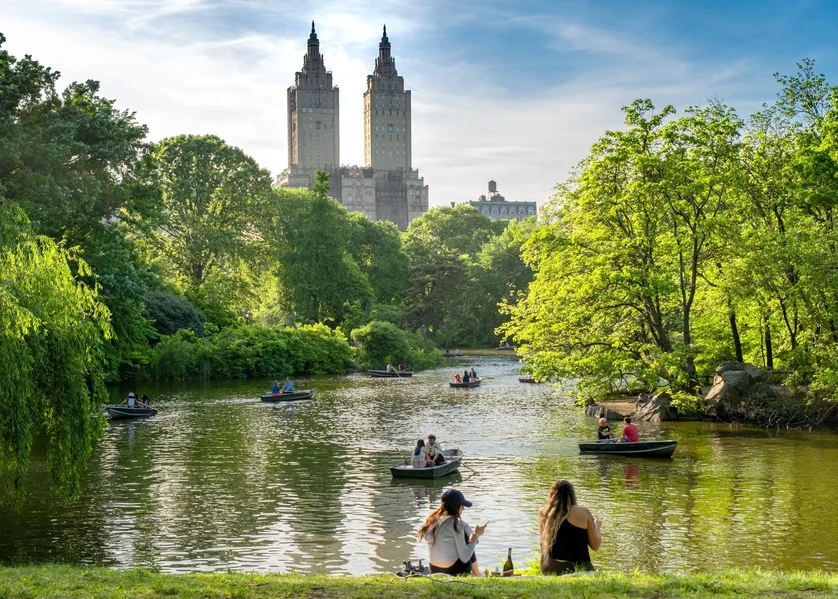
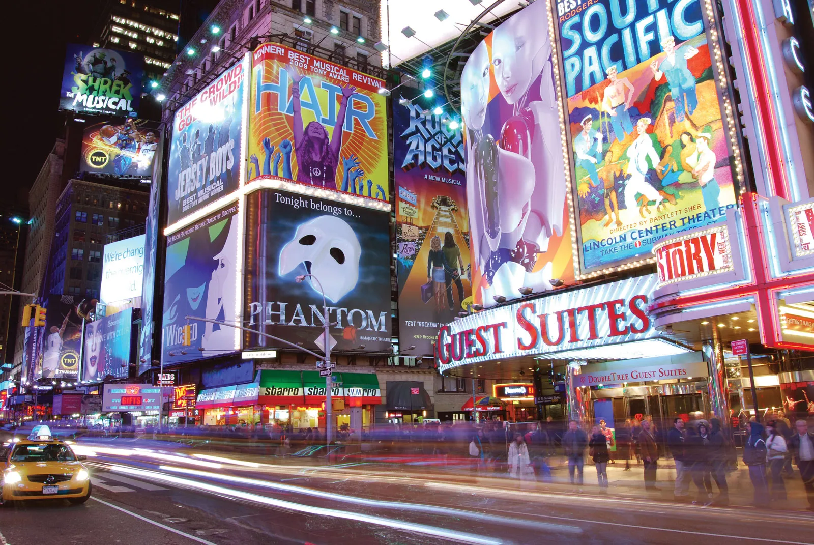
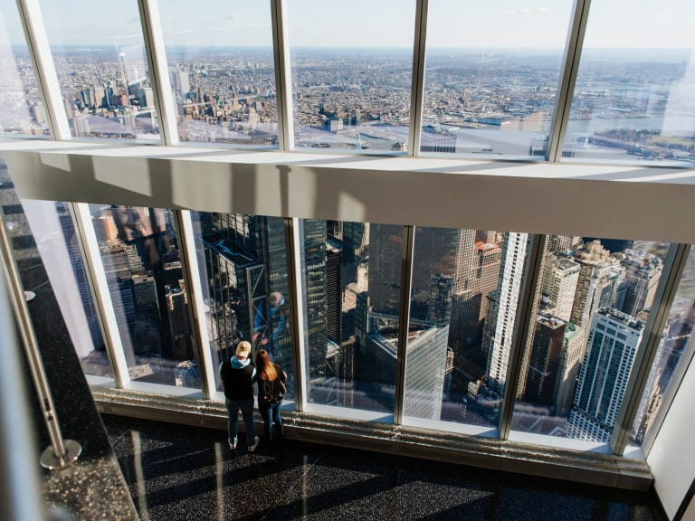
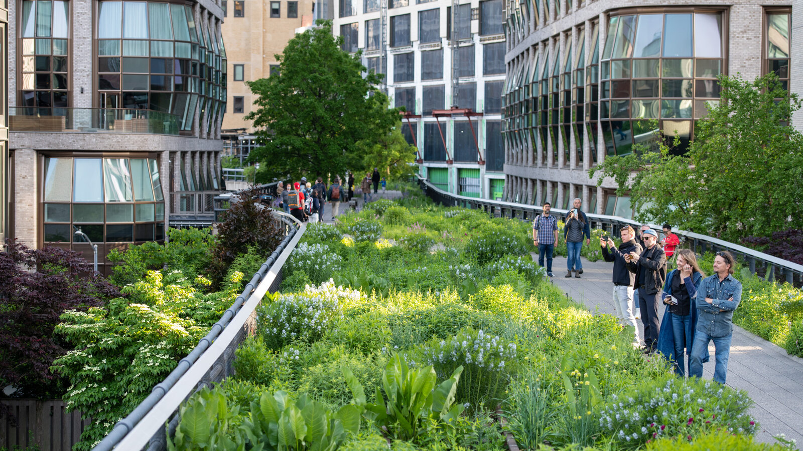
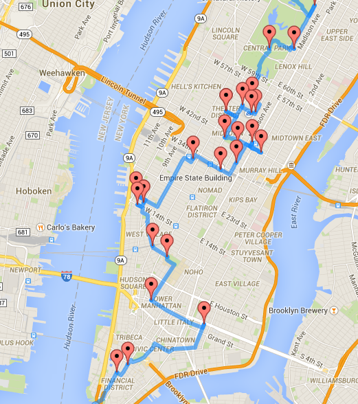
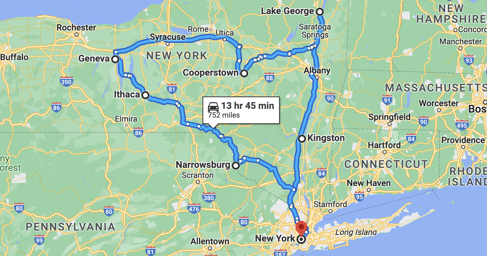
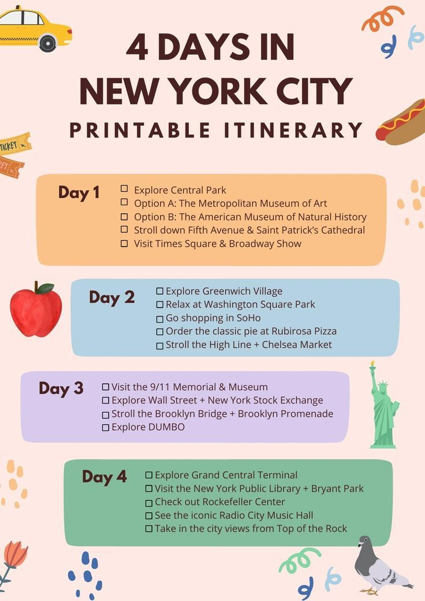
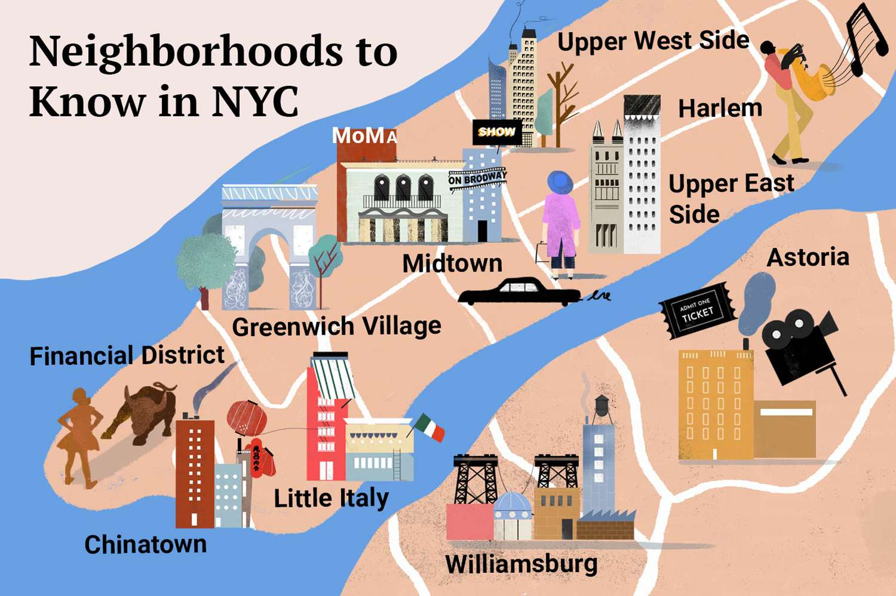

Main Tourist attractions of NYC
Statue of Liberty
An iconic symbol of freedom, located on Liberty Island.Central Park
A massive green oasis in Manhattan, perfect for relaxation and recreation.Times Square
The vibrant heart of NYC, famous for its bright lights and theaters.Empire State Building
A historic skyscraper offering breathtaking views of the city.Brooklyn Bridge
An architectural marvel connecting Manhattan and Brooklyn.The Metropolitan Museum of Art
One of the world's largest art museums, featuring collections spanning centuries.Broadway
Renowned for its world-class theaters and musicals.One World Observatory
A stunning observation deck atop the Freedom Tower.9/11 Memorial & Museum
A somber tribute to the events of September 11, 2001.High Line
A unique elevated park built on a historic freight rail line.
Best things to do after reaching the City
See a Broadway Show
Watch world-class performances in the heart of the Theater District. Book tickets in advance for popular shows.View from One World Observatory
Enjoy panoramic views from the tallest building in the Western Hemisphere at the Freedom Tower.Explore Chelsea Market
Savor diverse culinary delights, shop for unique goods, and enjoy the trendy atmosphere in this historic building.Walk the High Line
Stroll through this elevated park built on an old railway line, featuring greenery, art, and fantastic city views.Tour Rockefeller Center
Visit the Top of the Rock observation deck, see the famous ice-skating rink, or take a tour of the NBC Studios.Visit the New York Botanical Garden
Explore lush gardens and seasonal exhibits in this Bronx-based oasis.Enjoy Coney Island
Ride the Cyclone roller coaster, relax on the beach, or enjoy a hot dog at the original Nathan’s.Visit Madame Tussauds
Pose with lifelike wax figures of celebrities and historical icons in Times Square.Explore the Intrepid Sea, Air & Space Museum
Tour a historic aircraft carrier and see fascinating exhibits, including the Space Shuttle Enterprise.

1

2

3

4

5

6

7

8

9

10
Best Tour Routes connecting New York City



